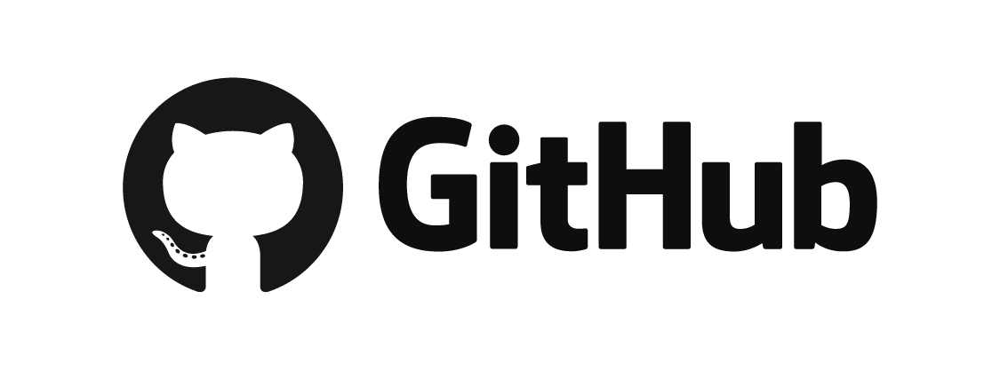
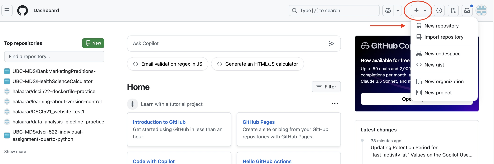
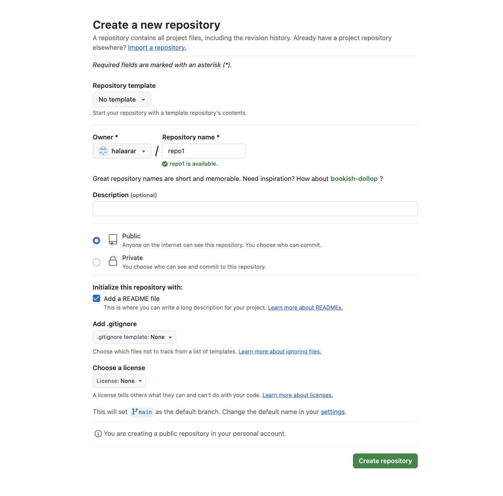
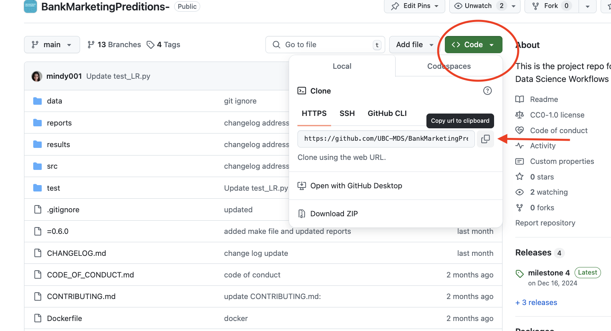

Introduction to GitHub
What are Git and GitHub?
Git is a version control system that tracks changes to files over time. It allows multiple people to collaborate on a project, keep a history of modifications, and revert to previous versions if needed. Git is a command-line tool that operates locally on your computer.
GitHub, on the other hand, is a cloud-based platform built on Git. It acts as a central hub where you can store, manage, and share your projects online. Think of Git as the engine and GitHub as the car: Git does the heavy lifting of version control, while GitHub provides a user-friendly interface and collaboration features.
Why is GitHub essential for data science and programming?
GitHub has become a cornerstone of modern programming and data science workflows for several reasons:
Version Control: GitHub enables you to track every change made to your code. This is invaluable when working on complex projects, as it allows you to roll back to earlier versions if something goes wrong.
Collaboration: GitHub makes teamwork seamless. Multiple contributors can work on the same project by creating separate branches, submitting changes through pull requests, and reviewing each other’s work.
Portfolio Building: For data scientists and programmers, GitHub acts as a showcase for your projects and skills. Employers often review candidates’ GitHub profiles to assess their expertise.
Open Source Contributions: GitHub hosts millions of open-source projects. By contributing to these projects, you can learn from others, build your reputation, and connect with a global community of developers and data scientists.
Integration with Tools: GitHub integrates with many tools commonly used in data science, such as Jupyter Notebooks, RStudio, and continuous integration/continuous deployment (CI/CD) systems, enhancing your workflow efficiency.
By mastering GitHub, you’ll not only improve your technical skills but also position yourself as a valuable team player in collaborative projects.
Setting up Git and GitHub
- Create a free GitHub Account
Visit GitHub and sign up for a free account. Choose a username that aligns with your professional identity, as it will be part of your public profile.
- Install Git on Your Computer
Download Git from the official website.Follow the installation instructions specific to your operating system (Windows, macOS, or Linux).
- Configure Git with Your Username and Email
Open your terminal (or command prompt) and set up your username and email. These details will be associated with your commits and displayed on GitHub.
```bash
git config --global user.name "Your Name"
git config --global user.email "your_email@example.com"Replace “Your Name” with your full name and “your_email@example.com” with the email address linked to your GitHub account.
Understanding Repositories
What is a repository?
A repository (or repo) is a storage space where your project lives. Think of it as a folder on your computer that contains all your project’s files, along with a history of changes made to those files. Repositories can be stored locally on your computer or hosted online using platforms like GitHub.
Types of repositories:
Public Repositories: Open to everyone. Anyone can view or clone the repository. Ideal for open-source projects.
Private Repositories: Restricted access. Only authorized collaborators can view or edit the repository. Best for personal or confidential projects.
Components of a repository
README.md: A markdown file that introduces your project and provides instructions for using it.
.gitignore: A file specifying which files or directories Git should ignore (e.g., log files, temporary files).
Branches: Versions of your project used to work on new features or fixes without affecting the main branch.
Commits: Snapshots of your project at a specific point in time, with messages describing the changes.
Core Git Commands for Beginners
git init: Initialize a new Git repository in your project folder.
git add: Stage changes to be committed.
```bash
git add .git commit: Save a snapshot of your project.
```bash
git commit -m "Initial commit"git status: Check the status of your repository.
git log: View the history of commits.
Cloning and Collaborating on a Repository
Cloning: Copy an existing repository to your local machine.
```bash
git clone <repository_url>Collaborating:
- Create a branch for your changes:
```bash
git checkout -b new-feature- Push changes to GitHub:
```bash
git push origin new-feature- Open a pull request to merge your changes into the main branch.
GitHub Features for Beginners
Issues: Track tasks, enhancements, or bugs.
Pull Requests: Propose changes and collaborate on code reviews.
Actions: Automate workflows like testing and deployment.
GitHub Pages: Host static websites directly from your repository.
Practicle Example: Your First Github Project
- Create a Repository:
Log in to GitHub and click “New Repository.”

Name your repository and initialize it with a README.md file.

click on “Create Repository”
- Clone the Repository:
Find the repository link here:

```bash
git clone <repository_url>- Add a File:
Create a Python script (hello_world.py)
- Commit and Push:
```bash
git add hello_world.py
git commit -m "Add hello world script"
git push origin mainTips and Best Practices
Write clear commit messages (e.g., “Fix bug in data processing script”).
Use .gitignore to exclude unnecessary files.
Keep your branches focused on a single feature or fix.
Regularly pull updates from the main branch to avoid conflicts.
Conclusion
Git and GitHub are powerful tools for version control and collaboration. By mastering the basics, you’ll be well-equipped to manage your projects, collaborate with others, and showcase your work. Start small, practice often, and soon you’ll feel confident navigating the world of version control and open-source development!